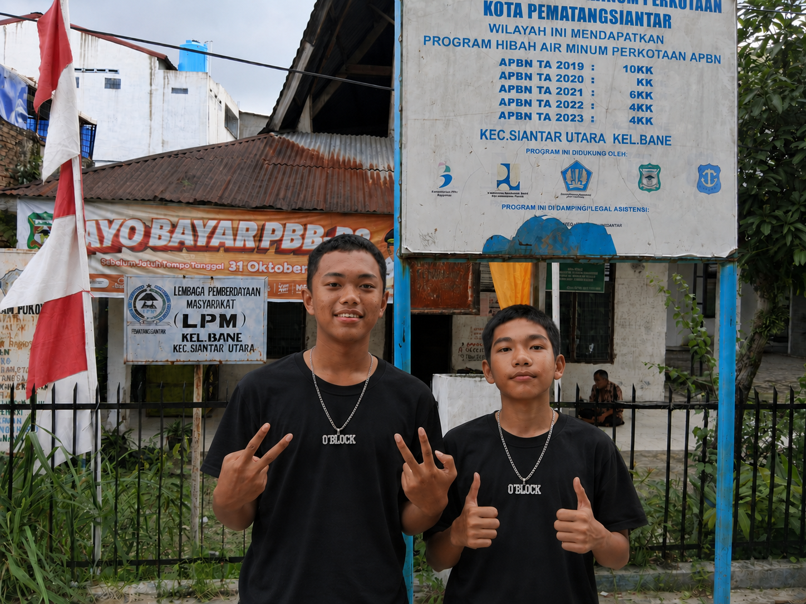
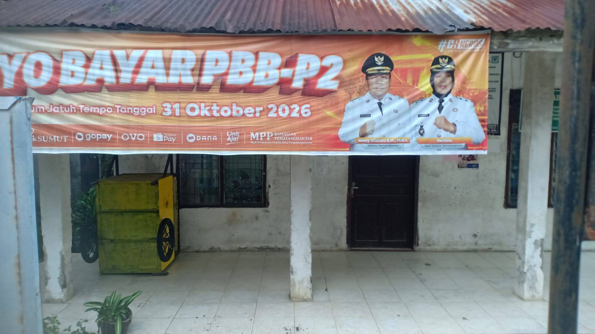
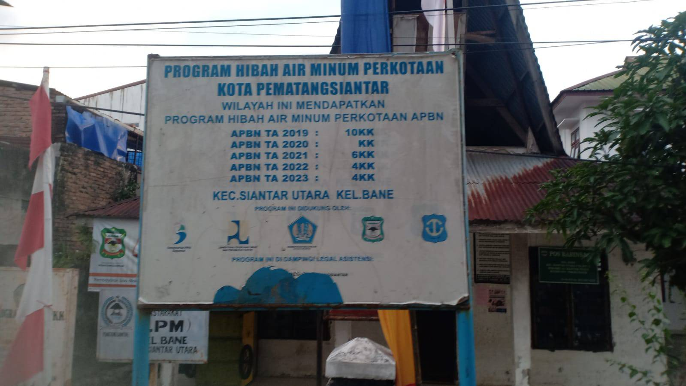

Profil Kantor Lurah Bane
Kantor Kelurahan Bane bertugas sebagai pusat penyelenggaraan pemerintahan, pembangunan infrastruktur, dan pembinaan sosial kemasyarakatan di wilayah Kecamatan Siantar Utara. Kami berkomitmen memberikan pelayanan umum yang profesional, cepat, transparan, dan dapat diakses oleh seluruh lapisan masyarakat.
📍 Alamat Kantor:
Kelurahan Bane, Kecamatan Siantar Utara, Kota Pematang Siantar, Sumatera Utara.
⏰ Jam Operasional Pelayanan:
Senin – Jumat: 08.00 – 16.00 WIB
Sabtu & Minggu: Libur
Visi & Misi Kelurahan Bane Serta Fungsi Utamanya
VISI
"Mewujudkan Kelurahan Bane yang Maju, Sejahtera, Aman, dan Unggul dalam Pelayanan Publik Berbasis Kebersamaan."
MISI
- Meningkatkan mutu pelayanan administrasi kependudukan yang cepat, transparan, dan akuntabel.
- Mendorong partisipasi aktif masyarakat dalam gotong royong dan pembangunan infrastruktur wilayah.
- Mewujudkan lingkungan pemukiman yang bersih, asri, aman, dan bebas banjir.
- Meningkatkan kordinasi dan sinergi antara lurah, kader PKK, tokoh masyarakat, serta lembaga RT/RW.
FUNGSI UTAMA
- Menyelenggarakan urusan pemerintahan umum di wilayah Kelurahan Bane, termasuk administrasi kependudukan dan pertanahan.
- Melaksanakan pemberdayaan masyarakat, mulai dari pembinaan RT/RW hingga dukungan terhadap kegiatan PKK dan karang taruna.
- Memberikan pelayanan langsung kepada masyarakat, seperti penerbitan surat keterangan dan pengantar dokumen kependudukan.
- Memelihara ketenteraman, ketertiban umum, serta keamanan lingkungan bersama warga dan aparat terkait.
- Memelihara sarana dan prasarana serta fasilitas pelayanan umum milik Kelurahan Bane.
- Membina lembaga kemasyarakatan dan mendukung program pembangunan yang bersumber dari swadaya maupun bantuan pemerintah.
Struktur Organisasi
Mulatua Siregar,SE
Kepala Kelurahan Bane
Yustina. M Ambarita,SE
Sekretaris Lurah
Lambok. H Sihombing,SH
Kasi Pemerintahan
Mery Adelina Tarigan,SE
Kasi Kesra & Trantib
Layanan Administrasi Warga
Surat Keterangan Usaha
Pengurusan Keterangan Usaha (SKU) untuk perizinan UMKM warga.
Surat Keterangan Domisili
Pengurusan bukti tempat tinggal resmi warga di wilayah kelurahan.
Surat Pengantar KTP/KK
Pengurusan surat pengantar untuk pembuatan e-KTP dan Kartu Keluarga.
Galeri & Gambar Sekitar Kantor

Foto Warga
Gangs O Block in Bane subdistrict
Beberapa 2 warga sekitar(anak muda) yang termasuk kawasan kelurahan bane.

Foto Kantor
Kantor Lurah
Tampak Kantor lurah Secara Full Dari Depan

Foto Program
Program Hibah Air Minum/h4>
List Wilayah Yang Mendapatkan Hibah Air Minum Perkotaan APBN.
Ingin Melihat Lebih Banyak Foto Kegiatan & Aparatur Kami?
Kunjungi album galeri khusus untuk melihat kumpulan dokumentasi kegiatan dan foto tim staf kelurahan.
Buka Album Galeri Lengkap 🖼️